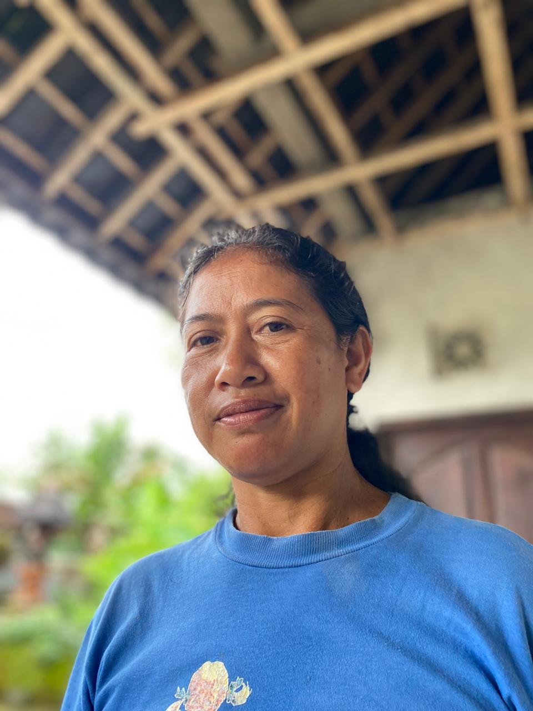
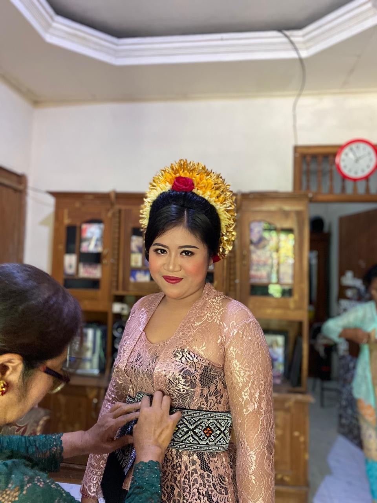

Dokumentation
Member of a Windu Family

Ni Ketut Angerniasih
This is a photo of my mother with her sweet smile

Bapak And Memek
This is a photo of when they finished praying from the temple
I Made Gede Windu Raharja
This is a photo of Windu before the stage.

Ni Wayan Asih Budi Utami
this is a photo of Ni Wayan Asih Budi Utami who is preparing before marriage.